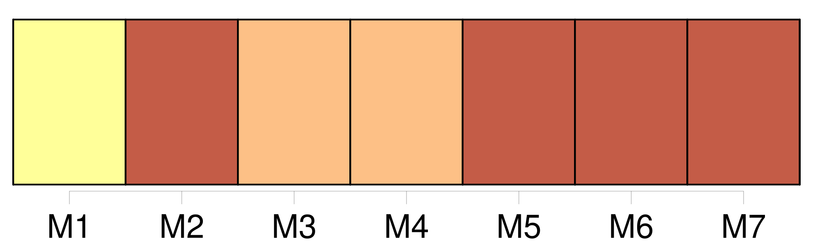

Longueur nb maillons : 8 mentions |
  |
Les rideaux de damas rouge à grandes fleurs, relevés par des torsades d’ or, laissaient voir la morte couchée tout de son long et [les mains jointes] sur la poitrine. [17 phrases] La pâleur de ses joues, le rose moins vif de ses lèvres, ses longs cils baissés et découpant leur frange brune sur cette blancheur lui donnaient une expression de chasteté mélancolique et de souffrance pensive d’ une puissance de séduction inexprimable ; ses longs cheveux dénoués, où se trouvaient encore mêlées quelques petites fleurs bleues, faisaient un oreiller à sa tête et protégeaient de leurs boucles la nudité de ses épaules ; [ses belles mains] , plus pures, plus diaphanes que des hosties, étaient croisées dans une attitude de pieux repos et de tacite prière, qui corrigeait ce qu’ auraient pu avoir de trop séduisant, même dans la mort, l’ exquise rondeur et le poli d’ ivoire de ses bras nus dont on n’ avait pas ôté les bracelets de perles. [70 phrases] Baise [-les] pour [les] guérir, cher amour!!
» Elle m’ appliqua l’ une après l’ autre les paumes froides de [ses mains] sur la bouche ; je les baisai en effet plusieurs fois, et elle me regardait faire avec un sourire d’ ineffable complaisance. [71 phrases] J’ avais un bras passé derrière la taille de Clarimonde et une de [ses mains ployée dans la mienne] ; elle appuyait sa tête à mon épaule, et je sentais sa gorge demi-nue frôler mon bras. [68 phrases] » Et, tout en disant cela, elle pleurait, et je sentais pleuvoir ses larmes sur mon bras qu’ elle tenait entre [ses mains] [31 phrases] Enfin la pioche de Sérapion heurta le cercueil dont les planches retentirent avec un bruit sourd et sonore, avec ce terrible bruit que rend le néant quand on y touche ; il en renversa le couvercle, et j’ aperçus Clarimonde pâle comme un marbre, [les mains jointes] ; son blanc suaire ne faisait qu’ un seul pli de sa tête à ses pieds. |
La ressource peut être téléchargée sur la page Ortolang
Si vous avez des questions ou vous voyez des erreurs, merci d'envoyer un mail à silvia.federzoni89@gmail.com
Site développé par S. Federzoni (contact)